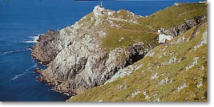
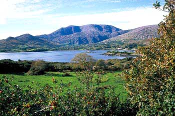

Cork County has alot to offer outside is city center. it Is on of the most beautiful areas of Ireland with its rolling hills, rugged coastline and historic features.
Some of its spectacular features include:
Mizen Head Signal Station is open to the public for the first time since it was completed in 1910. The Mizen Vision! Visitor Centre in the Keeper's House and the Engine Room, the famous Suspension Bridge, the 99 Steps and the views up the South and West Coasts combined with the exhilaration and excitement of the wild Atlantic waves and ancient tortured rocks guarantee a unique and authentic experience.
In any weather the Magic of the Mizen is spellbinding.  Mizen Vision the Mizen Head Signal Station Visitor centre has been open since June 1st, 1994. In April 1993 the fog signal station was demanned and went automatic. A local co-operative, Mizen Tourism, was formed to develop the location into a visitor centre to create rural employment. In July 1993 a lease was signed with the Irish Lights and the exciting Mizen Vision! became a reality.
Mizen Vision the Mizen Head Signal Station Visitor centre has been open since June 1st, 1994. In April 1993 the fog signal station was demanned and went automatic. A local co-operative, Mizen Tourism, was formed to develop the location into a visitor centre to create rural employment. In July 1993 a lease was signed with the Irish Lights and the exciting Mizen Vision! became a reality.
There are spectacular views on the Bridge and at the end of the peninsula and the houses have been equipped with an audio-visual room, a map and archive room; the Keeper's kitchen and bedroom have been retained and there is a bird and sea watch room. Imagination takes over in the Mizen environment cave, the Fastnet Room, the Underwater Room and the Storm Room. You are very welcome to the Mizen! Don't miss it!
South, the Fastnet Rock Lighthouse, Ireland s Teardrop, was the last landfall seen by many emigrants to America and one of Marconi s first telegraph stations. Mizen Signal Station had the first Radio Beacon in Ireland, 1931; the history of Safety at Sea communications is here, Wireless Signals, Racon, GPS and DGPS. Displays about the lives of the Irish Lights Keepers who left the Mizen in 1993, The Bridge with full Navigational Aids Simulator, Automatic Weather Station, Maps, Guided Tours. Mild Climate all year. Visit Mizen Café and Shop@theMizen. Coaches and Bus Tours welcome.
Famous in song, Bantry Bay in West Cork Ireland is of legendary beauty. Bantry, at the head of the bay, is a busy market town and fishing port. | Photo Courtesy Reendonegan House | ||
Bantry Bay was twice entered by French fleets: in 1689 to support James II against William of Orange, in 1796 to aid Wolfe Tone and an Irish uprising. A storm dispersed the 1796 fleet and few of the ships made the Bay.
The Bantry region is divided into three main areas corresponding with the peninsulas i.e. The Beara Peninsula, The Sheep's Head or in Irish (Muintir Bhaire) Peninsula and The Mizen Peninsula. These extend south-west in the Atlantic up to 30 miles.

Touring routes are numerous and include the breathtaking scenery of the coastal routes around each of the peninsulas, spectacular winding roads through the mountains, cliff-face roadways, and the unrivalled vistas of mountain lakes, waterfalls, fast running rivers, prehistoric monuments, ancient castles and Christian settlements, forts and stately homes with their majestic gardens.